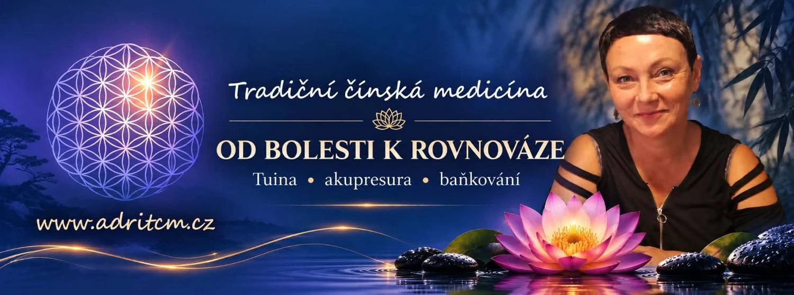

Tradiční čínská medicína Petřvald – od bolesti k rovnováze. Tuina, akupresura, baňkování.

Tradiční čínská medicína
Od bolesti k rovnováze
Individuální péče o tělo. Hledáme souvislosti, nejen místo, které bolí.
Tradiční čínská medicína se dívá na člověka jako na celý systém. Věnuji se tuině, akupresuře a baňkování a k tomu přidávám doporučení pro každodenní péči.
Vaše tělo není soubor jednotlivých částí. Pojďme se na ně podívat jako na celek.
Regenerace a více energie
Větší rovnováha
Co nabízím
Služby
Tuina, akupresura a baňkování v duchu tradiční čínské medicíny.
Tuina
Manuální techniky pro uvolnění těla, zmírnění bolesti a podporu pohyblivosti.
Tuina je čínská terapeutická masáž, která pracuje cíleně s tělesnými drahami a body. Střídá tlaky, hnětení, roztírání a protahování.
Akupresura
Práce s body pro úlevu od bolesti, zmírnění napětí a podporu přirozené rovnováhy.
Akupresura vychází ze stejných principů jako akupunktura, ale obejde se bez jehel. Prsty nebo palci se vyvíjí přesně mířený tlak na vybrané body.
Baňkování
Podpora prokrvení, uvolnění svalů, odstranění stagnace a regenerace těla.
Při baňkování se na kůži přikládají skleněné baňky, ve kterých vzniká podtlak. Po ošetření mohou na kůži na pár dní zůstat kruhové stopy, jsou normální součástí metody.
Tradiční čínská medicína
Individuální přístup, pohled na člověka jako celý systém a doporučení pro každodenní péči.
Hledáme souvislosti, nejen místo, které bolí.
Pomáhám při
- bolestech zad, šíje a krku
- napětí v ramenou a přetížení svalů
- bolestech kloubů a pohybového aparátu
- stresu, napětí, únavě
- horším spánku
- podpoře celkové rovnováhy a vitality
Filozofie
Pět elementů
Dřevo, oheň, země, kov a voda se navzájem živí v nekonečném kruhu. Podle tradiční čínské medicíny jim odpovídají roční období, orgány i emoce.
Dřevo
Jaro · východ
- Orgány
- játra a žlučník
- Emoce
- hněv
- Chuť
- kyselá
- Barva
- zelená
Dřevo živí oheň, samo je živeno vodou.
Oheň
Léto · jih
- Orgány
- srdce a tenké střevo
- Emoce
- radost
- Chuť
- hořká
- Barva
- červená
Oheň živí zemi, sám je živen dřevem.
Země
Pozdní léto · střed
- Orgány
- slezina a žaludek
- Emoce
- starosti
- Chuť
- sladká
- Barva
- žlutá
Země živí kov, sama je živena ohněm.
Kov
Podzim · západ
- Orgány
- plíce a tlusté střevo
- Emoce
- smutek
- Chuť
- pálivá
- Barva
- bílá
Kov živí vodu, sám je živen zemí.
Voda
Zima · sever
- Orgány
- ledviny a močový měchýř
- Emoce
- strach
- Chuť
- slaná
- Barva
- tmavě modrá
Voda živí dřevo, sama je živena kovem.
Kontakt
Objednejte se
Objednání a informace do zprávy: telefon nebo WhatsApp.
Adriana Chylová
Ostrava a okolí
Petřvald, Šenovská 2249, naproti restauraci Petřvaldďanka 601 297 499 stastnoucestu@seznam.cz
Petřvald, Šenovská 2249, naproti restauraci Petřvaldďanka 601 297 499 stastnoucestu@seznam.cz
Šenovská 2249, Petřvald
Mapa se načte až po kliknutí, bez sledování návštěvníků.Malé kroky k velké změně.